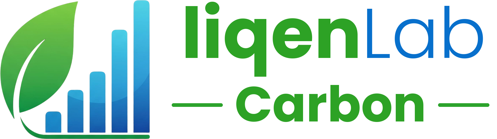

{{ t.nav_how }}
{{ t.nav_what }}
{{ t.nav_app }}
{{ t.nav_method }}
{{ themeLabel }}
{{ curName }}
{{ palTitle }}
{{ p.label }}
{{ p.check }}
ES
EN
{{ t.nav_how }}
{{ t.nav_what }}
{{ t.nav_app }}
{{ t.nav_method }}
{{ themeLabel }}
ES
EN
{{ palTitle }}
{{ p.label }}
{{ p.check }}
{{ t.nav_enter }}
{{ t.badge }}
{{ t.h1a }}
{{ t.h1b }}
{{ t.h1c }}
{{ t.hero_sub }}
{{ t.cta_start }}
{{ t.cta_how }}
{{ t.card_title }}
{{ t.card_example }}
{{ t.card_delta }}
{{ co2Label }}
kg CO₂e
{{ b.label }}
{{ b.pctLabel }}
{{ t.card_save }}
{{ saveLabel }}
{{ t.chip_title }}
{{ t.chip_sub }}
{{ t.k_how }}
{{ t.h_how }}
{{ st.n }}
{{ st.title }}
{{ st.desc }}
{{ t.k_what }}
{{ t.h_what }}
{{ t.p_what }}
{{ src.title }}
{{ src.desc }}
{{ t.k_app }}
{{ t.h_app }}
{{ f.kicker }}
{{ f.title }}
{{ f.desc }}
{{ t.k_method }}
{{ t.h_method }}
{{ t.p_method }}
{{ sc.n }}
{{ sc.title }}
{{ sc.desc }}
{{ t.h_cta }}
{{ t.p_cta }}
{{ t.cta_enter }}